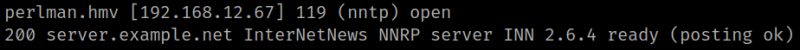
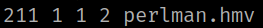
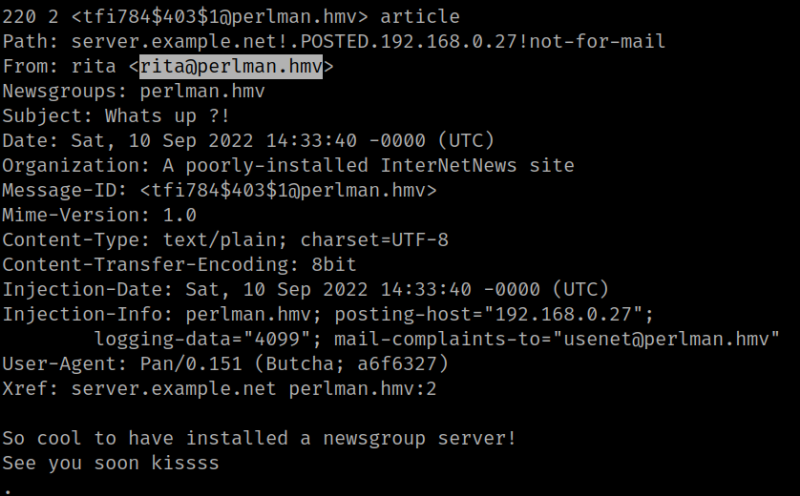

4.1 Nnp create group
The Network News Transfer Protocol (NNTP) is an application protocol used for transporting Usenet news articles (netnews) between news servers, and for reading/posting articles by the end user client applications.
There's an opened port 119 on the victim's machine.
1. Connect to the port 119 with netcat.
$ nc -v perlman.hmv 119
Output:

2. Run the following command.
HELP
LIST
GROUP perlman.hmv
Output:

3, Show article 2.
ARTICLE 2
Output:

You'll get a usernam “rita”.